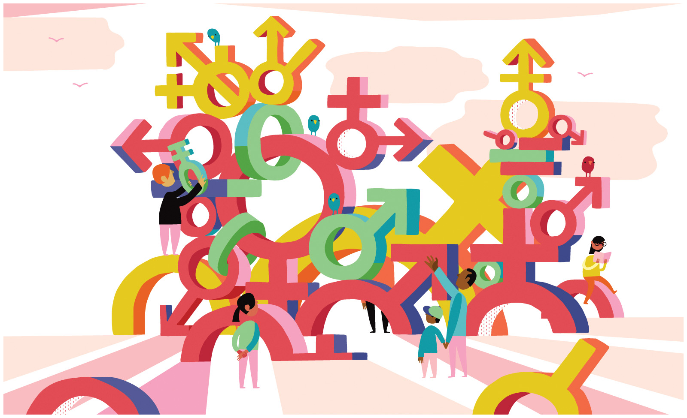

Bechdel Test¶
 This assignment is an exercise in applying methods for measuring gender bias in popular culture. You will be required to watch and analyze episodes from three different television programs. The assignment will help you to think about gender inequality and measuring culture.
Description¶
Watch Anita Sarkeesian discuss the Bechdel Test.
Read Walt Hickey, Ella Koeze, Rachael Dottle and Gus Wezerek’s “The next Bechdel Test.”
Pick three different television programs to watch. Before you watch them, make a guess about whether each will pass the Bechdel test.
Watch and code an episode from each of the three different television programs. Use the Bechdel test and one other test discussed in the Hickey et al. article. While watching, take notes on anything else meaniful you observe related to the sociological study of gender.
Requirements¶
Write a brief research report (of at least 250 words) that discusses your research and what you found. The report should include:
an introduction
a description of your data and methods of analysis.
a description of what you found by analyzing the three episodes.
An evaluation of what you learned about the media you studied. Did the findings surprise you?
An evaluation of the methods you employed. Based on your research, how would you revise the method?
No late assignments will be accepted.
Grading¶
Grading is High Pass (100); Pass (87) and Fail (0). Students who do not satisfactorily complete the exercise (i.e, Fail) will be allowed to revise and resubmit their application for a Pass within one week.
To be eligible for a High Pass, you must go substantially beyond the assignment requirements both in terms of research and analysis. To qualify for a High Pass, you must include a section at the front of your paper called “High Pass” with at least 50 words detailing how you exceeded the requirements.